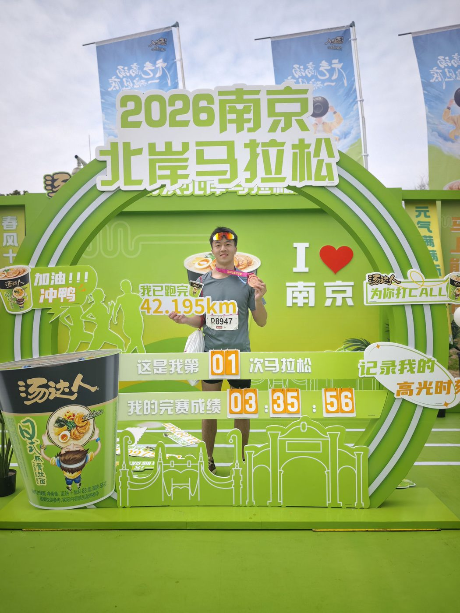
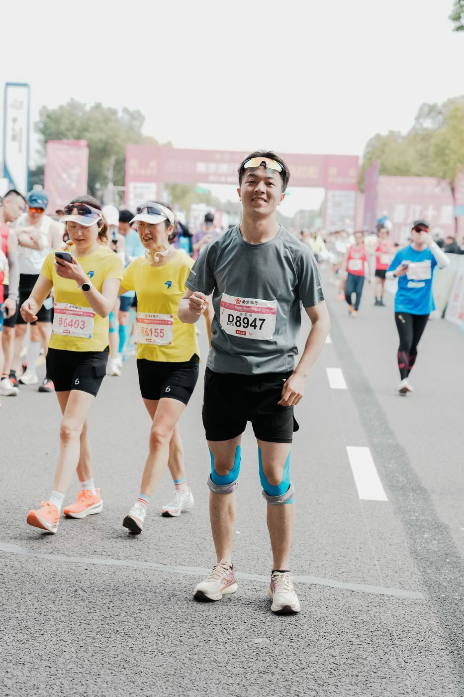
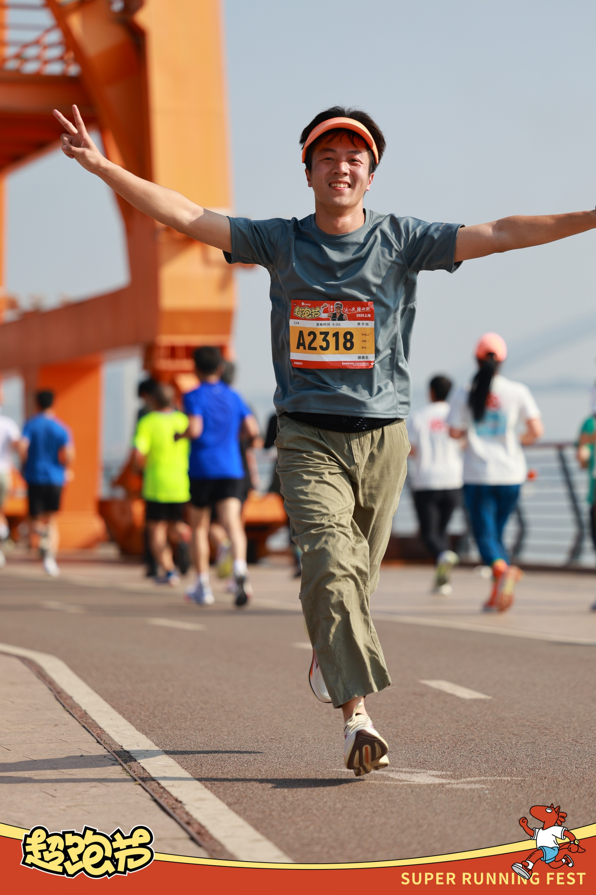
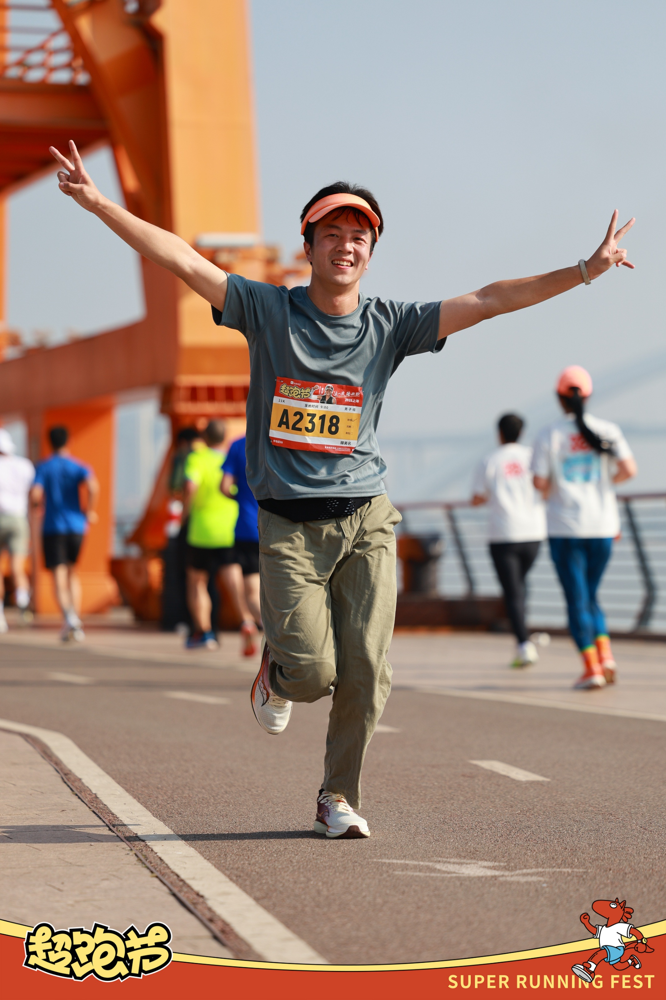
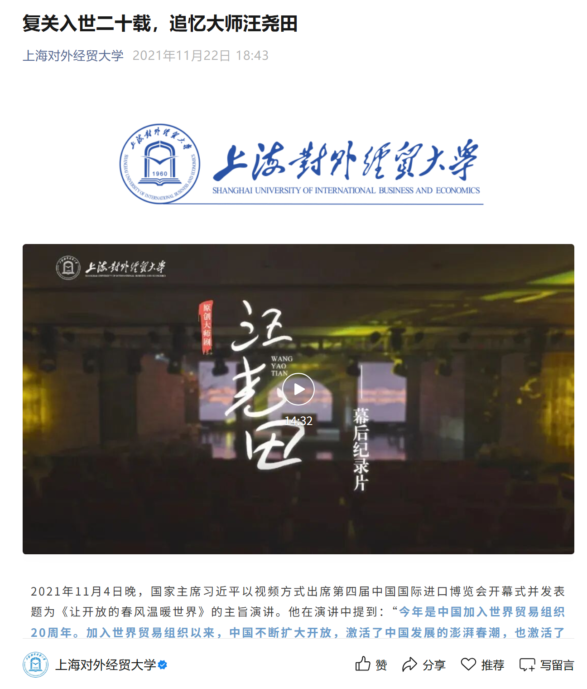

开一个视频分享账号，
把过程讲出来
过去 3 个月做的东西大部分留在了 README 和 commit 里。下一步想把"怎么和 AI 协作做 Skill""47 轮实验里学到的东西"用视频讲清楚——不是教程，是过程的复盘。文字适合沉淀，视频适合传染。
滕美名，22 岁，上海。上海对外经贸大学应届，退役军人。 3 个月和 Claude Code 协作做出 Multi-Agent Research（47 轮控制实验）+ auto-new 元迭代引擎。飞书 CLI 创作者大赛 「十佳优秀 Skill」入选 2 项（3 投 2 中），收录至字节 larksuite 官方开源库。 从 2026 年 1 月开始学 AI，感谢 Waytoagi 社区。跨过了很多困难，中间多次想过放弃，但知道这是喜欢的事情，所以，还在加油。

输入调研主题，产出一份可深度覆盖全网实时数据的报告。将原本需数天的人工桌面调研压缩到约25分钟。针对单agent调研深度不足、同一角色兼写作和自审查容易自信的痛点，设计“课题输入→可信报告输出”的多Agent工作流（分工调研+独立质检+综合成稿），已落地跨境电商选品、行业与竞品调研、产品开发等真实决策场景。
最初只是想做一次多 Agent 的尝试。后来它逐渐解决了三个更具体的问题：信息怎么搜、怎么汇总、怎么呈现。写论文、做调研汇报、做 PPT，以及后续不少项目，实际上都接在这条信息处理链路上。
我的角色：提出方向、提供资料、做阶段判断，并把真实使用中暴露的问题带回下一轮。Claude Code 承担了大量代码实现和框架演进；这里不把它写成我独自完成的工程。
第一版来自一次老师的语音分享。文件通信、角色专业化和阶段流程成为起点；最初的 PM 中心制、7 个 Agent 和 5 个 Phase，并没有被当作最终答案。
随后补读 12 篇论文，并把每次研究暴露的流程问题写入 learning-history。PM 中间层、500 字 handoff 等设计，都在失败或对照实验后被移除或改写。
框架稳定后，用固定课题和真实生产任务测试角色、交接、质检与综合机制。结果有效才 KEEP；证据不足就降级结论；每一轮由 Git 留下可回看的版本。
全量交叉带来新洞察但成本增加 65% 时，我把问题从“要不要做”改为“什么情况下值得做”；连续两轮只是在验证、没有再改框架时，停止继续堆机制。
让任何skill/脚本/prompt在真实使用中自我进化（self-correction自我校正循环），提前定义“什么是好”和验收标准，AI执行“改→实验→批评式评估（指出哪里不好+为什么，而非只打分）→保留/回滚”循环。实现离场持续运行，直至匹配最终量化目标并验收。把原本需要全程监督、反复手动调试好几天的“优化AI系统”的工作，变成无人值守的自动循环。
将个人经历、偏好、目标蒸馏为结构化画像库。针对信息过载时人无法全程在线逐一判断，AI基于个人context先做预判断（哪些与“我”相关），再由人最终决策：把个性化匹配从依赖现场判断，前置为可复用的context资产。目前已落地于求职岗位初筛（海量岗位→按方向+画像预筛→人综合评定），同一模式可迁移至任何信息密集决策场景。
吸收Multi-Agent Research构建的经验，通过多agent协作，以解决知识库持续增长过程中的健康维护问题。skill可以实现团队知识系统的体检和免疫功能：通过持续对比正式文档与团队群聊消息记录，诊断知识库和团队真实业务中不一致的内容，及时处理知识库过期、冲突、缺失和泄漏的知识，并把它们变成可执行的修复任务。
这是一个基于飞书 Base 的实时评分系统搭建 skill。它把问卷设计、数据存储、维度统计、仪表盘生成、手机评分页、大屏展示和部署踩坑整合成一套可重复执行的流程，让团队可以用接近零成本的方式搭建培训、年会、评审、投票、360 评估等现场互动场景的数据大屏。
它们不是一条事后拼出来、只会上升的成绩线。Multi-Agent Research 先把信息搜集、汇总和呈现做成了一套工作流；后面的项目再把这套底层能力带进元层迭代、个人 Context、团队知识和业务现场。并不是每个项目都直接由它产生，但它为其中很多项目打了基础。
从写论文、调研汇报、PPT，到个人知识、团队知识和业务工具；
问题不同，底层仍是怎样搜集信息、汇总信息，再把它呈现清楚。
识别跨部门表格汇总中的重复操作，借助 AI 生成 VBA 脚本并自主调试验证，将逐表手动处理改为批量自动化，形成“需求拆解 → AI 协作 → 代码落地 → 效果验证”的工具化思路。
负责“领航计划”新人带教项目的数据运营，收集销售经理带教报告并形成项目执行记录；使用 XLOOKUP、FILTER、INDIRECT 处理多维人员名单，操作北森 HR 系统推进试用期员工权限与考核流程。协助完成 HTML 海报、PPT、问卷设计与数据统计。
检索行业报告、认证微信公众号和前沿技术论文，独立完成 40 页+ 半导体材料行业深度报告，绘制 90+ 图表，从行业背景、后端应用和前沿技术等角度梳理产业链。
每日追踪科技板块新闻并维护日报底稿，参与产业周报制作；负责 8 月 REITs 周报更新，产出 8 篇周报，并将日报、产业周报和 REITs 周报的更新流程整理为飞书 SOP。
半导体材料研报 PDF ↓服役期间获个人嘉奖一次，负责两名新兵带教，担任中队腰鼓队主力、代理文书兼新闻报道员；参加军人运动会获三公里科目第二名。
任宣传部长一年，组织筹划“新生风采大赛”“樱花节个人照”等大中型活动。
采访校园大师剧《汪尧田》主演团队，成稿获上海市校报好新闻通讯类一等奖；主笔人物通讯采访 3 篇，独立撰写校园消息新闻稿 1 篇，共同署名稿件 14 篇，总阅读量 6w+，单篇最高 1w+。
跑步时我给自己留下一点思考时间，让我应对赶路的慌张。




在关闭电脑的时候，想用文字记录下每一次体验的"慢节奏"。

北京游记AI 产品 · AI 研究